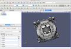
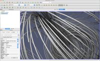

pvOSPRay Demos
This page serves as a repository for 'ready-to-run' demos for pvOSPRay. If you do not yet have a version of pvOSPRay installed on your system, you can follow these instructions for getting pvOSPRay.
Click the teaser image to navigate to the demo information page.
|  | Basic Walk-Through: shows how to enable pvOSPRay within ParaView and compares OSPRay ray traced images to the rasterized default images. |
|  | Basic Visualizations: shows how to use pvOSPRay within ParaView to render isosurfaces, glyphs and streamlines using a simple yet interesting dataset. |